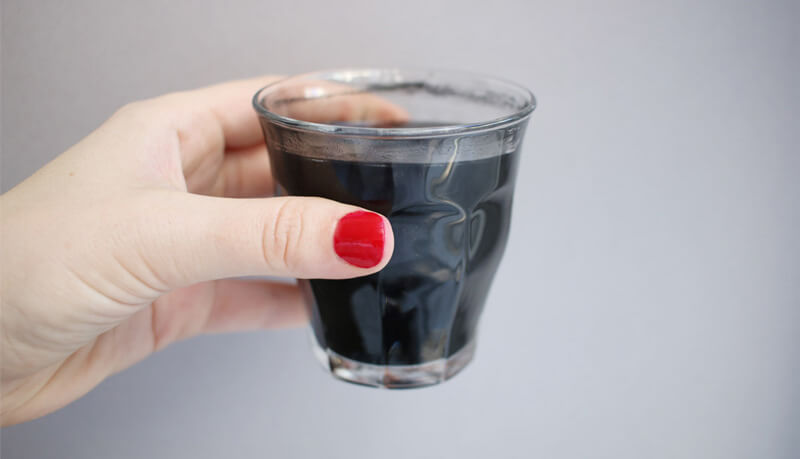
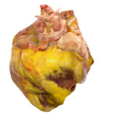
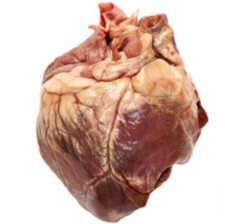
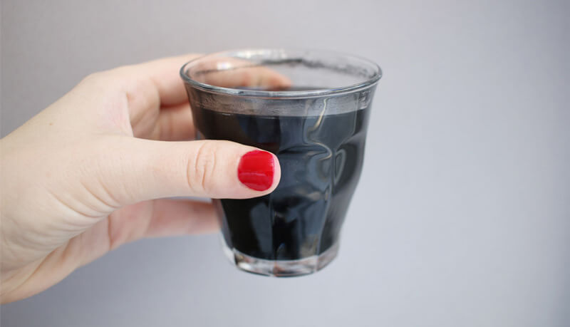
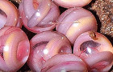
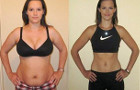
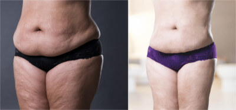
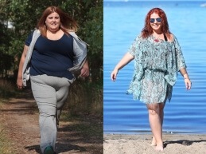

Dr Jefferson no promete nada, solo habla de los hechos. Sin duda, es la terapia de adelgazamiento mejor documentada que existe.
REPORTAJE ESPECIAL:


ANTES DEL TRATAMIENTO

DESPUÉS DEL TRATAMIENTO

CIENTÍFICOS: DOS HORAS DESPUÉS DE TOMARLO, ¡ELIMINAS HASTA 1 KG DE ACÚMULOS PERJUDICIALES DEL INTESTINO!

El nuevo descubrimiento del Doctor Juan Samper, demuestra que es posible deshacerse a la vez del sobrepeso y del colesterol alto. |
Los científicos informan que basta con tomarse solo una dosis para eliminar los acúmulos perjudiciales podridos del intestino, así como los parásitos, peligrosos para nuestra vida, y los hongos candida albicans. ¡Son los responsables de la mayoría de las enfermedades de la civilización, incluyendo la plaga de la obesidad! Dr Jefferson ha comprobado con las pruebas médicas que una desintoxicación intensa provoca una rápida y eficaz eliminación del tejido adiposo, librando tu cuerpo de esta manera de toxinas cancerígenas que se acumulan en la grasa, en la sangre y en las arterias. Por eso, no solo adelgaza, sino sobre todo nivela la mayor causa de sobrepeso, es decir, las toxinas, los hongos y los parásitos acumulados a lo largo de los años.
El Doctor John Jefferson del Massachusetts University Hospital, ha creado un método ultra rápido y al 100% natural de la desintoxicación del organismo. En el ámbito científico, incluyendo tanto a los bioingenieros, como los grupos médicos y el entorno académico, todos afirman que se trata de una fórmula revolucionaria en la lucha contra la obesidad y otras enfermedades del siglo XXI. Comprobada por tests empíricos independientes, pruebas químicas y clínicas...
Solo en EE.UU. y en Japón la fórmula del Doctor fue probada ya por 9.000 personas. Las encuestas y entrevistas de consumidores confirmaron que tiene dos propiedades.
- Funciona 157 veces más rápido que el ejercicio combinado con una dieta basada en zumos de frutas
- Limpia el intestino de los restos de comida acumulados durante años entre los que viven hongos y parásitos peligrosos para tu salud (¡aunque no seas consciente de que existan!).
Las personas que han probado el tratamiento del Doctor, llamado comercialmente , debido al color negro de su composición, eliminaron las toxinas retenidas y los acúmulos de colesterol peligrosos para la salud que se encontraban en los órganos internos.
Ya tras 2 horas eliminarás del organismo los acúmulos nocivos y comenzarás a quemar grasa de forma activa: resultados garantizados por análisis médicos
Esta es la explicación del Doctor sobre el funcionamiento de la fórmula superrápida de desintoxicación del organismo de manera científica:
"El secreto de la eficacia de la fórmula reside en su composición. Contiene una mezcla única de sustancias desintoxicantes potentes, entre las que destaca el Carbón Activado. Limpian el organismo de toxinas las 24 horas del día".
La más importante es el carbón activado: conocida sustancia de origen vegetal que se extrae de las raíces y bosques calcinados, que ayuda a desechar sustancias y toxinas de nuestro organismo.
Las sustancias incluidas en la fórmula llegan a los lugares atacados por los parásitos y funcionan a más de un nivel:
Primero, obligan de inmediato al organismo a que suelte los acúmulos nocivos del intestino y
del hígado.
Segundo, y especialmente importante para tu silueta, activan el proceso de combustión de tejido adiposo. Cuando baja el nivel de tejido adiposo, eliminas automáticamente las toxinas nocivas que ralentizaban tu metabolismo hasta ahora.
Después , limpian intensamente las venas y las arterias, gracias a introducir los antioxidantes en la sangre. Estos se unen a las toxinas y a los pedazos de colesterol con cadenas de péptidos, para luego ser eliminados de la circulación.
Justo la sinergia de estas tres actividades permite una desintoxicación intensiva, quemar la grasa y reducir el nivel de colesterol a la vez. Por lo tanto, no solo es posible reducir la cantidad de grasa en el organismo, sino también eliminar las enfermedades relacionadas con el sobrepeso más peligrosas para la salud.
Advertencia: confía solo en los métodos demostrados y compra sólo en la página autorizada en España de
50 % de DESCUENTO para nuestros lectores:
La revista World of Science ha reconocido el método del Doctor como el mayor descubrimiento en medicina del 2018
No hay lugar a casualidades en la ciencia. No hay lugar a promesas. Solo los resultados de los análisis hablan por sí mismos. Por eso, Dr Jefferson elaboró un análisis clínico especial que confirmó que solo dos horas bastan para pesar menos y reducir el nivel de colesterol nocivo.
Los investigadores comprobaron la eficacia del tratamiento en un grupo de 122 personas entre 23 y 65 años. Los participantes del experimento siguieron una dieta cada día que elos mismos describieron como alta en grasas y rica en colesterol. El objetivo de la investigación era comprobar científicamente si la fórmula de desintoxicación del Doctor de verdad garantiza eliminar las toxinas nocivas y si, como resultado, existe una disminución del nivel de tejido adiposo en el organismo a unos valores seguros, sin dietas ni ejercicios especiales . Estos son los resultados del análisis:
Resultados documentados de la terapia de 4 semanas con , publicados en una revista especializada en medicina:
- Con base en las encuestas, los investigadores calcularon que los participantes adelgazaron de medio 18.57 kg (de los cuales 14 kg eran de grasa pura, mientras que el resto de masa perdida salió de restos de comida que quedaban en el intestino) en 30 días.
- El análisis de la sangre de los participantes demostró que el nivel de colesterol malo (LDL) en los pacientes disminuyó 60 unidades.
- Los pacientes dijeron adiós a sus problemas de halitosis, digestión y estreñimiento.
- El IMC de los pacientes bajó una media de 7.55 puntos.
Transcurso del tratamiento de acuerdo con la documentación de la investigación*
*Nota del editor: Se ha mantenido el texto original. Los datos de los pacientes se han eliminado para proteger su privacidad.
Primera semana
Me apunté a los análisis porque no dejaba de engordar a pesar de hacer ejercicio y comer sano. Estaba asustada, porque por si fuera poco, en poco tiempo aumentó mi nivel de colesterol malo de manera alarmante. Además, tenía problemas de concentración, me ponía enferma a menudo y siempre estaba fatigada. Ya dos horas después de comenzar el tratamiento con , noté los primeros efectos. Tenía más energía y me sentía ligera y saludable.
Dos días después, seguía sintiéndome genial y casi ni pensaba en la comida. También estaba relajada y descansada, ya que desde que empecé el tratamiento, dejé de tener remordimientos por mi estado de salud.
A los 6 días me subí a la báscula. Resultado: ¡9 kg menos! ¡Por primera vez desde hacía años pesaba menos de 80 kg!
Tercera semana
Me siento mejor que nunca. Tengo más energía y duermo bien, seguramente debido a eliminar las toxinas y los parásitos de mi organismo, y con ellos sus problemas relacionados. Estoy relajada y además adelgacé 8 kilos más. ¡Eso da un total de 17 kg en 3 semanas!
Quitarme estos 10 kilos ha sido un alivio verdadero para las articulaciones y la columna. Me siento como si hubiera nacido de nuevo.
Cuarta semana
Después de 4 semanas peso 65 kilos, pero es que además los análisis han confirmado que ya no tengo parásitos ni cándida. Justo eso era la causa de mi sobrepeso y de mi pésimo estado de salud. Al eliminar esos "inquilinos" indeseables, ¡tengo la impresión de que mi metabolismo funciona más rápido que cuando estaba en el instituto!
Después de un mes me hice un análisis de colesterol. Cuando el médico me hizo pasar a la consulta, dijo con una cara muy seria: "Isabel, al principio pensaba que me había confundido de paciente. Pero no es un error, ¡ENHORABUENA!"
¡Mi nivel de colesterol había caído 80 puntos! Por fin puedo dormir tranquila, sin preocuparme por mi salud."
Tarjeta de participante del ensayo:
|
(comienzo del experimento) |
|||
| Peso | 84 | 75 | 65 |
| Colesterol total | 289 mg/dl | 164 mg/dl | 147 mg/dl |
| LDL - colesterol malo | 210 | 171 | 130 |
| HDL - colesterol bueno | 36 | 40 | 40 |
| Triglicéridos | 218 | 99 | 82 |
De los testimonios se puede sacar la conclusión de que este innovador tratamiento elaborado por el Doctor no solo asombra a los científicos, sino también a la gente corriente. Seguramente por esa razón, este método se ha convertido en una forma popular de desintoxicar el organismo a fondo y ha adelantado por la derecha a todos los métodos para adelgazar conocidos hasta ahora. Cada vez más gente quiere comprobar su eficacia en sus propias carnes.
Cuando vi el informe de los análisis clínicos me sorprendí verdaderamente. Desde entonces recomiendo este tratamiento a todos los clientes que tengan serios problemas a la hora de adelgazar. Están maravillados.
Mariano Vilalta - nutricionista de Burgos
El Doctor recibía tantas peticiones de personas que querían probar su tratamiento de desintoxicación superrápido que elimina la grasa y los acúmulos de colesterol, que su pequeño laboratorio no daba abasto con la producción. Por eso decidió colaborar con una empresa que produce un suplemento para adelgazar de acuerdo con su receta. Lo llamó simplemente .
Ya que se trata de un método científico, el Doctor afirmó que solo se cuentan los resultados y no las promesas. Por eso, con cada producto obtendrás la garantía triple: de originalidad, calidad y satisfacción .
Recuerda, solo con leer sobre el mejor método de limpieza del organismo no hará que adelgaces ni que mejores tu estado de salud. Por eso, si quieres deshacerte eficazmente de los parásitos y de las toxinas de tu cuerpo, tienes que probar este método por tu cuenta. Si lo haces, te convencerás de que los resultados no solo están comprobados mediante análisis médicos, sino también gracias a tu experiencia. Es más, los efectos son tan rápidos que no tendrás que esperar más de 24 horas para verlos. Es posible que si has tomado el café antes de leer este texto, ¡ya hayas observado los primeros efectos!
Información importante: Recuerda: el producto solo contiene sustancias naturales y no interfiere con ningún medicamento, por eso no deberías dejar la medicación recetada durante el tratamiento.
Después de publicar este artículo, la empresa que comercializa en España nos ha contactado para ofrecer a todos nuestros lectores un 50% de descuento sobre suprecio normal ¡no esperes más! ¡No tienes nada que perder! Haz clic en el enlace de abajo para pedir estando seguro que pides un producto original que funciona de verdad.
Información importante para aquellas personas que aún no hayan realizado su pedido en internet. No debes enviar dinero ni pagar nada por internet para recibir . Haz clic en el enlace y revisa la información de la página. Al final encontrarás un formulario muy simple, donde debes ingresar tu información. Pagarás cuando el mensajero o cartero te entregue tu pedido. ¡Es tan fácil que todos pueden hacerlo!
-
Método de antes de la guerra quema grasa rapidísimo...
- 
Elimina el sobrepeso en 14 días con este método simple
-
Método de 1930 te ayuda a perder 26 kg
-
Para quemar 954 kcal en 10 minutos solo hay que...
-
Especialistas: "Es lo mejor para eliminar grasa..."
- 
Te permite adelgazar rápido después del embarazo
Opiniones de los lectores

|
Jimena
Cano ¡Perdí 8 kg en un mes! La obesidad me dificultaba la vida. El dolor articular, la falta de aliento, la sudoración... estos son algunos de los problemas que enfrentaba. Un amigo dietista me recomendó . ¡Cuando lo he probado, supe que NUNCA jamás usaría otro método para adelgazar! ¡El sobrepeso ha desaparecido totalmente! Me gusta Comenta Compartir
a 81 personas les gusta esto
Más comentarios
|



| Laura |
|
Cuando descubrí el método del Doctor, todo cambió. La grasa disminuía diariamente, al igual que mi nivel de colesterol. En total adelgacé 25 kilogramos y mi colesterol regresó al nivel adecuado. Este producto me devolvió la salud y el buen aspecto. #weightloss
- clau24 Qué genial! <3
- carlos186 Qué te parece si quedamos? ;) <3 #love
- Alicia90 qué cambio! espero que sigas así
- Marta Preciosa!!
- lorien lo tengo que probar #weightloss #sexy #pretty
- teresa también quiero una transformación así!!! Felicidades!
- Juan_combra pero qué buena!
 13 . ¡Me
gusta! . hace
12 minutos
13 . ¡Me
gusta! . hace
12 minutos